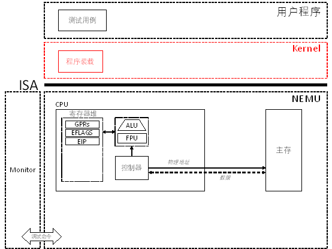

PA 2-2 装载ELF文件——Linux中的文件
在上一节中所展开的实现指令的实验中，测试用例的可执行目标文件是通过交叉编译并使用objcopy直接得到对应的内存镜像加载到内存中执行的。在真实的计算机系统中，这是一种效率极低的存储可执行文件的方法。现代的类UNIX操作系统，如Linux，主要使用可执行可链接格式（Executable and Linkable Format，简称ELF）来存储目标文件。本节我们就目标文件的装载展开讨论。

代码实现
ELF文件的装载
- 修改
testcase/Makefile中LDFLAGS并
make clean
-
实现Kernel中的
loader()； -
使用
make test_pa-2-2执行测试用例并通过。
在经历了PA2-1的大量指令的解析与实现后，PA2-2的工程量是相对较小的，但是理论知识相对更为重要一些。
正如在视窗(Windows)系统下的可执行文件后缀名为.exe，现代的类UNIX操作系统，如Linux，主要使用可执行可链接格式（Executable and Linkable Format，简称ELF）来存储目标文件。
从完成实验的角度，本小节主要任务有两个。首先是修改位于testcase/Makefile的起始地址，其中第7行0x30000被用于PA-2-1的测试，我们需要将其更改为第二行的表示，即将起始地址更改为0x100000。
其次，还需要实现kernel/src/elf/elf.c中的代码实现loader函数，这个函数的伪代码已经在课程中指出了，在elf.c代码的第43、45行也有Todo操作的提示，对照来看，我们需要实现的是伪代码第5行至第7行的操作。

通过 man elf可以查看ELF头的结构，其中包括了我们实现loader函数所需要使用的Offset、FileSiz等基本信息。执行结果如下
依据上述内容，elf_load()函数的实现相对简单。正如 Todo所指出的，具体地，我们首先需要获取ELF文件中对应段的起始地址，然后通过memcpy()函数将对应段的内容拷贝到内存中。如果段的大小大于文件大小，则需要将剩余的段置零。
void* target = (void*)ph->p_vaddr;
uint8_t* start = (uint8_t*)elf + ph->p_offset;
memcpy(target, start, ph->p_filesz);
if(ph->p_memsz > ph->p_filesz){
target = (void*)ph->p_vaddr + ph->p_filesz;
size_t size = ph->p_memsz - ph->p_filesz;
memset(target, 0, size);
}
接着，我们使用make test_pa-2-2执行测试用例并通过，标志着PA2-2阶段代码模拟部分结束。
思考习题
PA2-2
为什么在装载时要把内存中剩余的p_memsz - p_filesz字节的内容清零?
根据预备理论知识，容易知道程序头表中每一项的结构可以通过man elf命令进行查看如下：
typedef struct {
uint32_t p_type;
Elf32_Off p_offset;
Elf32_Addr p_vaddr;
Elf32_Addr p_paddr;
uint32_t p_filesz;
uint32_t p_memsz;
uint32_t p_flags;
uint32_t p_align;
} Elf32_Phdr;
PA2-2阶段结束
擦干眼泪对着鸡零狗碎的日子 一笑了之 ——《天真的橡皮》